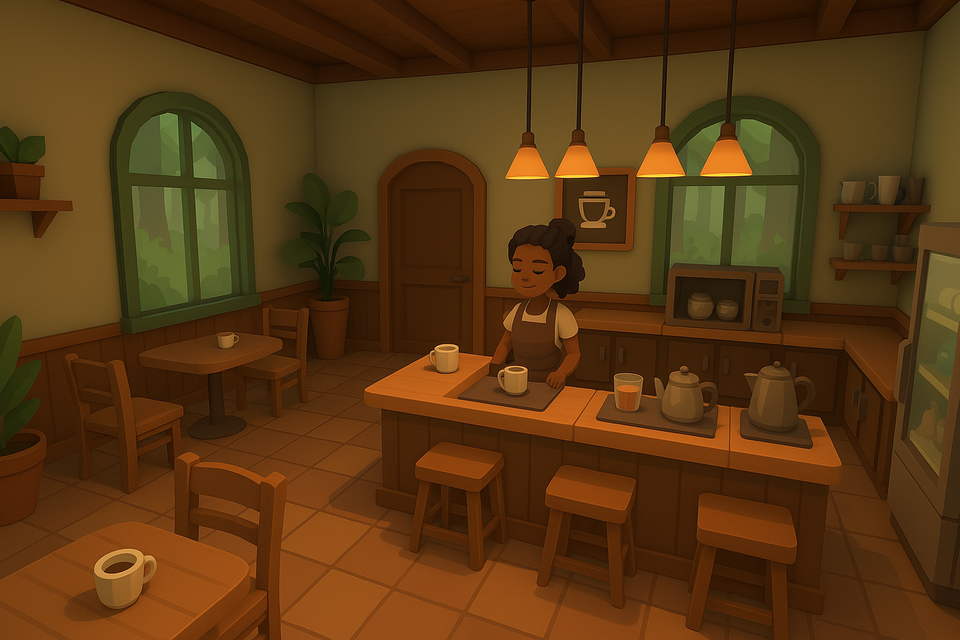

✨ Sip & Serve ✨
Sip & Serve is a cozy café management simulation game. You'll take on the role of a barista managing a warm, inviting café space — serving drinks, running operations, and creating a calm atmosphere for your customers.

Status
Sip & Serve is currently in early development using Godot Engine. Stay tuned for updates!